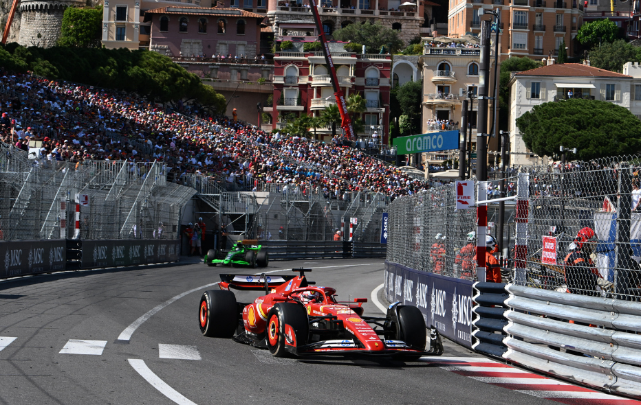
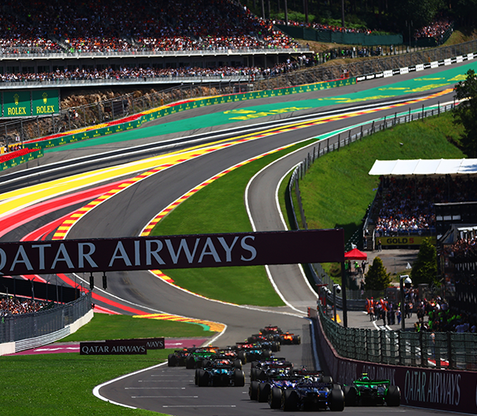
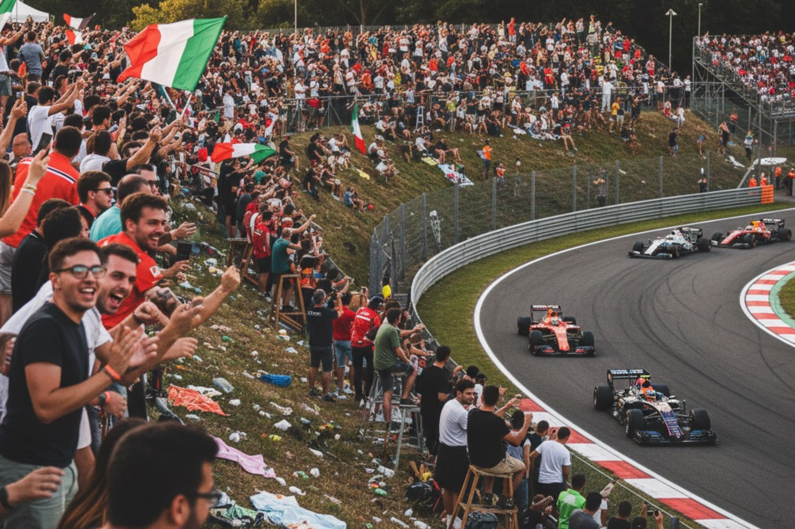
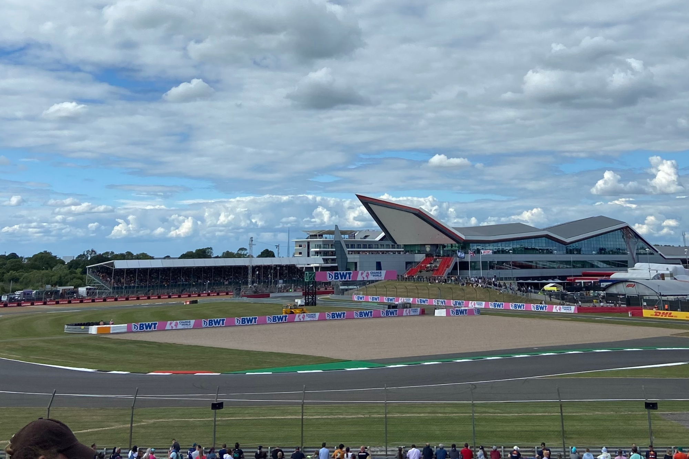
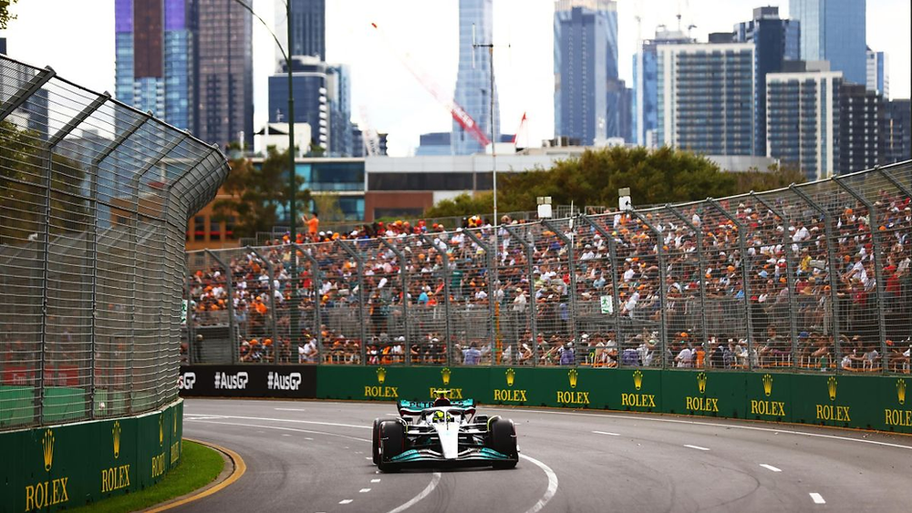

Formula 1 Tracks
Monaco Grand Prix
The Monaco Grand Prix (French: Grand Prix de Monaco) is a Formula One motor racing event held annually on the Circuit de Monaco, in late May or early June. Run since 1929, it is widely considered to be one of the most important and prestigious automobile races in the world, and is one of the races—along with the Indianapolis 500 and the 24 Hours of Le Mans—that form the Triple Crown of Motorsport. It is the only Grand Prix that does not adhere to the FIA's mandated 305-kilometre (190-mile) minimum race distance for Formula One races. The race is held on a narrow course laid out in the streets of Monaco.

Belgian Grand Prix
The Belgian Grand Prix is a motor racing event that forms part of the Formula One World Championship. The first national race of Belgium was held in 1925 at the Spa region's race course, an area of the country that had been associated with motor sport since the very early years of racing. To accommodate Grand Prix motor racing, the Circuit de Spa-Francorchamps race course was built in 1921 but until 1924 it was used only for motorcycle racing. After the 1923 success of the new 24 hours of Le Mans in France, the Spa 24 Hours, a similar 24-hour endurance race, was run at the Spa track.

Italian Grand Prix
The Italian Grand Prix is the fifth oldest national motor racing Grand Prix (after the French, the United States, the Spanish and the Russian Grand Prix), having been held since 1921. Since 2013, the Grand Prix has been held the most times, with 95 editions as of 2025. It is one of the two Grands Prix (along with the British) which has run every season as an event of the Formula One World Championship Grands Prix, continuously since the championship was introduced in 1950. Every Formula One Italian Grand Prix in the World Championship era has been held at Monza except in 1980, when it was held at Imola.

British Grand Prix
The British Grand Prix is a Grand Prix motor racing event organised in the United Kingdom by Motorsport UK. First held by the Royal Automobile Club (RAC) in 1926, the British Grand Prix has been held annually since 1948 and has been a round of the FIA Formula One World Championship every year since 1950. In 1952, following the transfer of the lease of the Silverstone Circuit to the British Racing Drivers' Club,[1] the RAC delegated the organisation of races held at Silverstone to the BRDC,[2] and those held at Aintree to the British Automobile Racing Club.[3] This arrangement lasted until the RAC created the Motor Sports Association.

Australian Grand Prix
The Australian Grand Prix is an annual Formula One motor racing event, taking place in Melbourne, Victoria. The event is contracted to be held at least until 2035.[1] One of the oldest surviving motorsport competitions held in Australia, the Grand Prix has moved frequently with 23 different venues having been used since it was first run at Phillip Island in 1928. The race became part of the Formula One World Championship in 1985. Since 1996, it has been held at the Albert Park Circuit in Melbourne, with the exceptions of 2020 and 2021, when the races were cancelled due to the COVID-19 pandemic.
